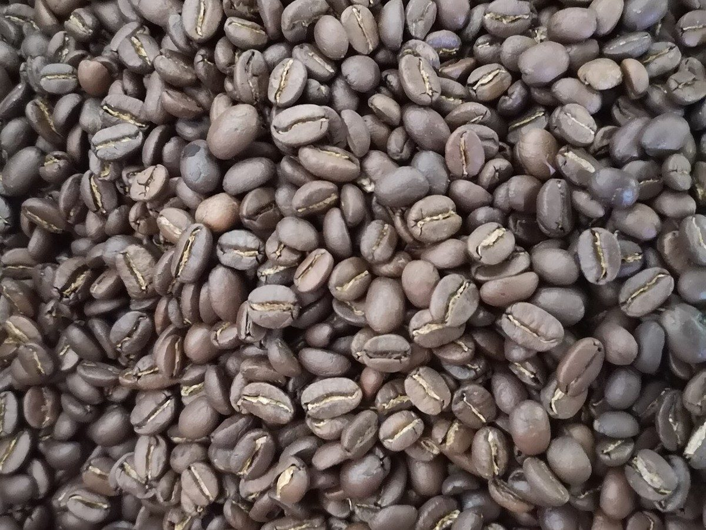
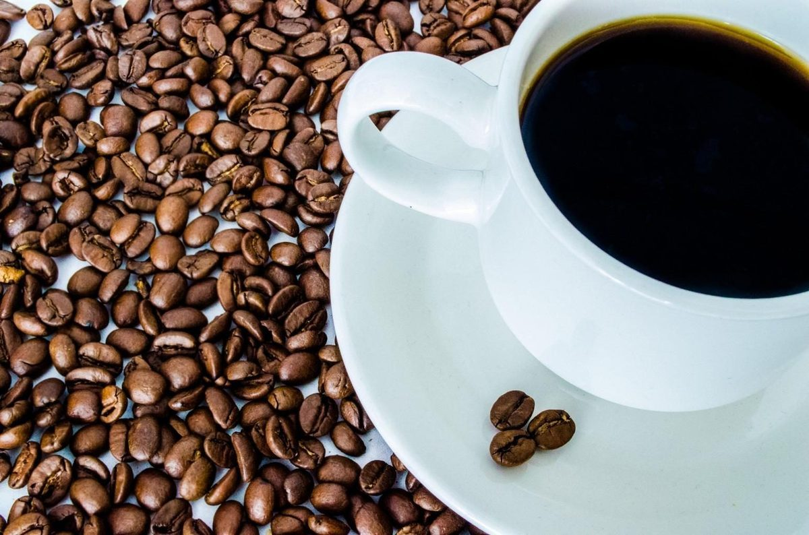

ACCESS
アクセス
所在地とInstagramのみ確認できています。
| 所在地 | 〒949-6407 新潟県南魚沼市島新田35-1 パーク メゾン ワダ |
|---|---|
| 電話 | 準備中 |
| 営業時間 | 準備中 |
| 定休日 | 準備中 |
| ご予約 | 準備中 |
| 駐車場 | 準備中 |
| SNS | Instagram @shinsaibashii |
地図は住所をもとに表示しています。営業時間・定休日・駐車場は準備中です。
写真(イメージ)
豆とパンのイメージ




写真はイメージです。お店のものではなく、この地域を写したものでもありません。